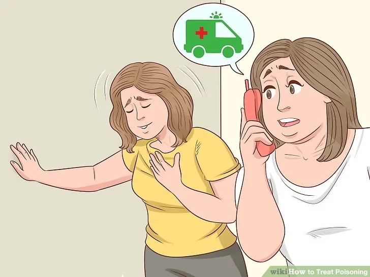
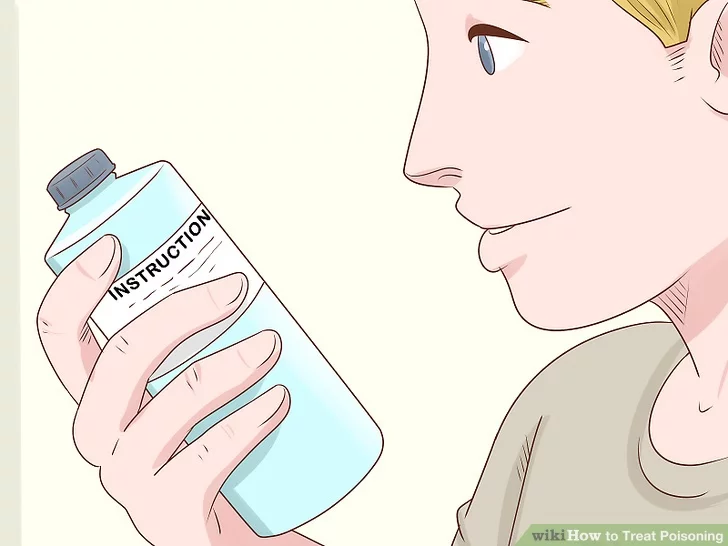

Emergency Solution - Poison
Stay Calm
If you know or suspect that you or someone else has been exposed to poison, you might feel scared or panicked. Remind yourself that the best thing you can do right now is call for help and let the medical professionals talk you through the situation.
If you find yourself panicking, stop what you’re doing for a moment and take a few deep breaths if it is safe to do so.
Check for thing that caused poisoning
If you know or think that you or another person has been poisoned by a household chemical (e.g., a cleaning product or a pesticide), check the directions and warnings on the label. Most of these products are labeled with instructions in case of accidental poisoning.
Try to help victim to spit out
If you know or suspect that someone has swallowed poison or put it in their mouth, encourage them to spit out any remaining poison. If they are unconscious, try to wake them up and ask them to spit.

Perform CPR
If the person who has been poisoned stops breathing, seems completely still and unresponsive, or has no obvious pulse or heartbeat, do CPR until they revive or help arrives.

Avoid putting anything in mouth
If someone loses consciousness after being exposed to poison, don’t attempt to administer any medicines or give them water.If the person begins convulsing, don’t put anything in their mouth, including your fingers.
Putting something in an unconscious person’s mouth could cause them to choke or inhale the foreign substance.